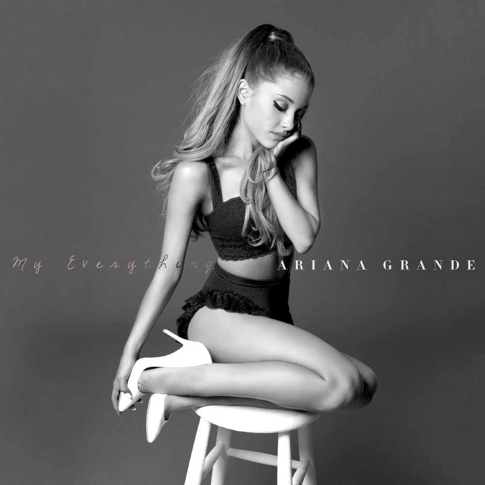
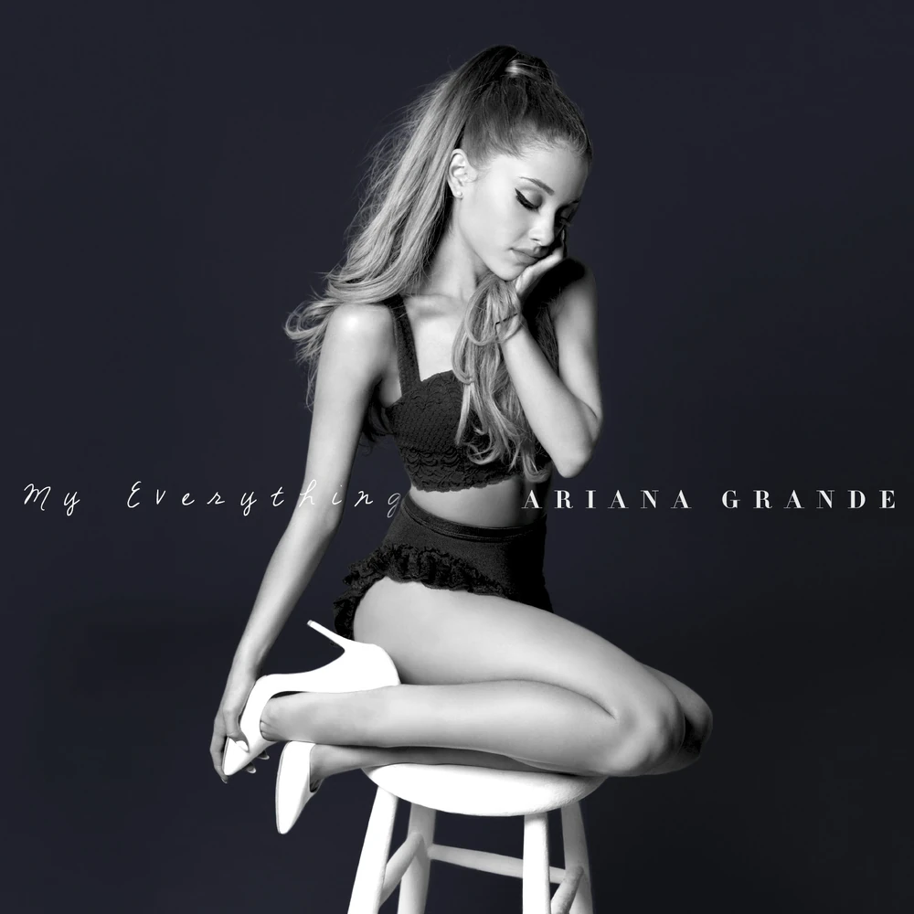
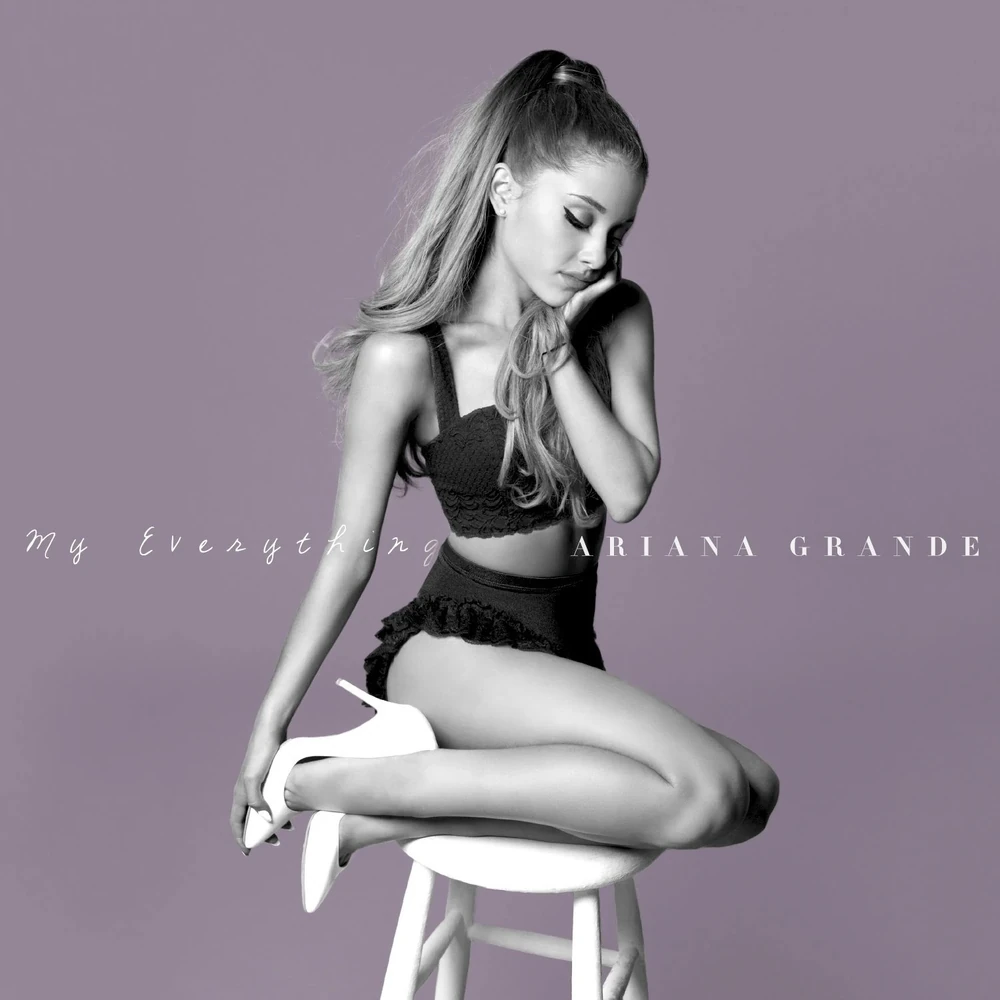
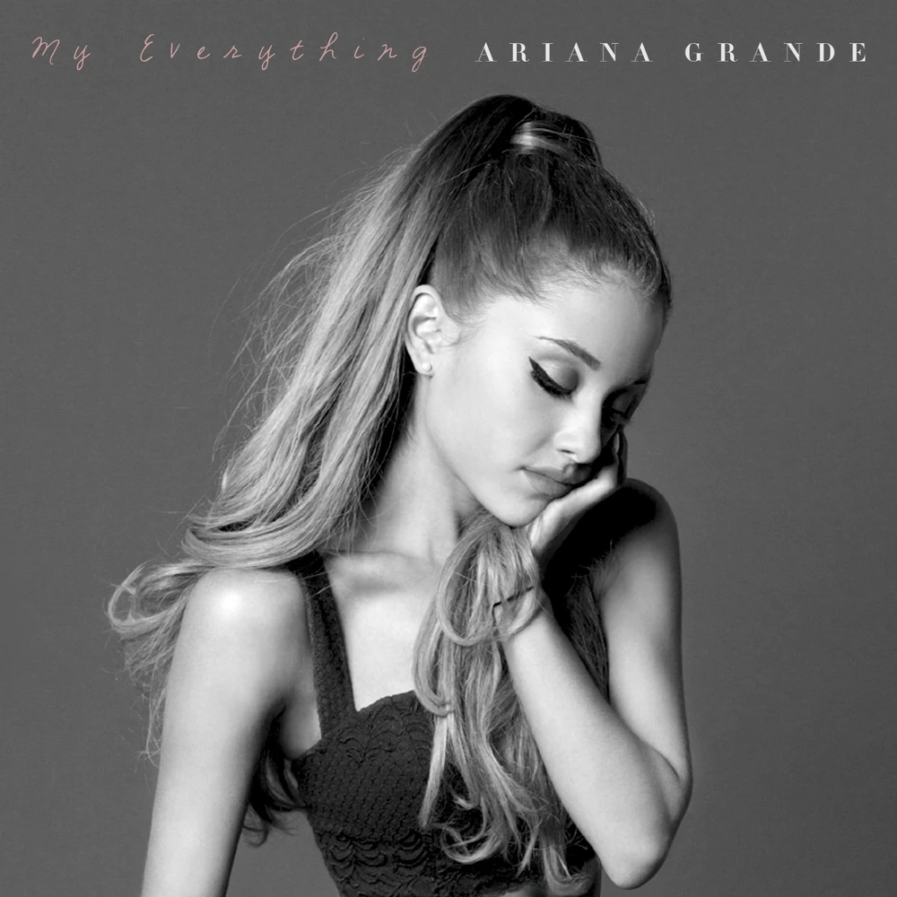
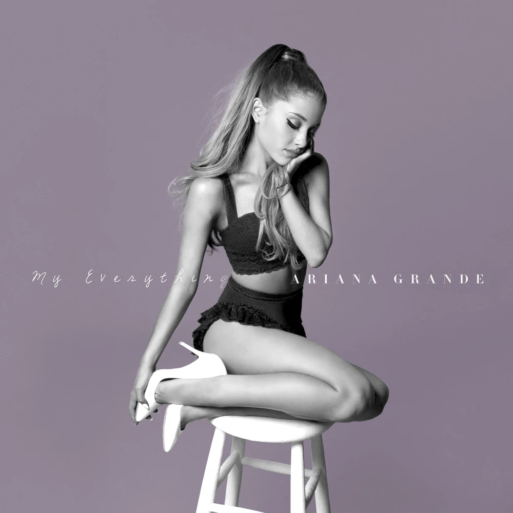
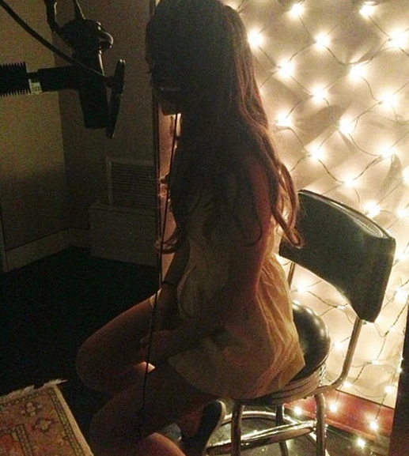
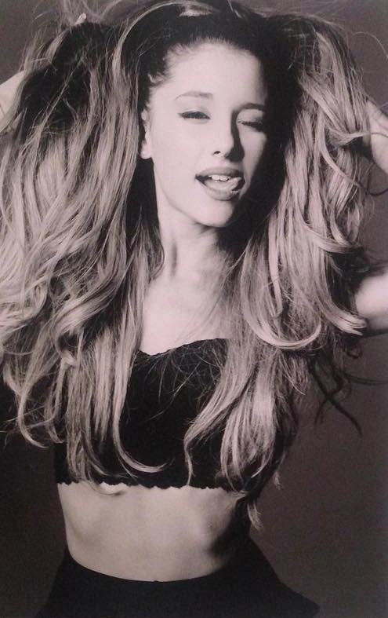

About ⋆ . ˚





My Everything (commonly abbreviated as ME) is the second studio album by American singer Ariana Grande, released on August 25, 2014 (August 22, 2014 in some countries), by Republic Records. Recorded between September 2013 and May 2014, Grande sought a more elevated, mature, and diverse sound compared to her debut album, Yours Truly. She collaborated with a wide array of co-writers and producers, including Max Martin, Shellback, Ryan Tedder, Rodney Jerkins, Ilya Salmanzadeh, Zedd, and Tommy Brown.
On August 22, 2024, the album was re-released in celebration of its ten-year anniversary, similar to Grande's debut album, Yours Truly. The ten-year anniversary edition of the album included the release of the Target bonus tracks on streaming services and vinyl singles.
Background ⋆ . ˚
On September 3, 2013, Grande released her highly acclaimed debut album, Yours Truly. Later that month, in an interview with Rolling Stone, Grande stated that she had begun writing and working on her second studio album and had already completed two songs. Recording sessions began in October 2013 with Grande working with previous producers from her debut album, Harmony Samuels and Tommy Brown. She had a meeting with Republic Records to discuss the album that same month.[4] Grande was initially aiming at releasing the album around February 2014. On October 15, 2013, Grande confirmed the song "Ridiculous", which was later scrapped for unknown reasons.

Grande sought for My Everything to sound like "an evolution" from her debut album, Yours Truly (2013). Primarily a pop and R&B record, My Everything expands on the 90s-inspired style of its predecessor while also approaching new genres, such as EDM, electropop, hip-hop, and soul. To help compliment these new, diverse sounds, Grande sought out a more mature lyrical identity.
In January 2014, Grande confirmed she had been working with new producers, such as Ryan Tedder, Savan Kotecha, Benny Blanco, Key Wane, and Max Martin. The next month, Grande shared that she had recorded a "very special and honest" song and wanted to name the album after it.

It was announced on March 3, 2014, that Grande would appear on "Don't Be Gone Too Long", the intended fifth single off Chris Brown's then-upcoming sixth studio album titled X. The single was originally set for release on March 25, 2014, however, due to Brown's assault charges and subsequent arrest, the single was postponed. Grande announced the songs delay on March 17, 2014, via Twitter, stating: "my loves… so obviously some things have changed recently… so we have to delay the [don't be gone too long] countdown… some things are out of our control."[8] That same night, she held a livestream to make up for the singles delay where she previewed five new songs from the album: "My Everything", "Be My Baby", "You Don't Know Me", "Only 1", and "Too Close". The single's release never materialized and its music video was later scrapped as well. Two days following the announcement, Grande revealed that due to the song's delay, she would be releasing the first single from her upcoming sophomore studio album instead.
Work for the album concluded sometime in late-May, 2014, with the photoshoot for the album's packaging taking place on May 27, 2014. On June 28, 2014, Grande revealed the title of the album and its release date.
Promotion and Tour ⋆ . ˚
On June 28, 2014, Grande announced that her album would be available for pre-order through her website.[28] Those who pre-ordered the album would gain exclusive access to a concert stream that would be held on August 24, 2014, where she will perform songs from the album live for the first time.[29] In the weeks preceding the release of My Everything, several previews of songs from the album were released.

The album was scheduled to be released in the UK, Ireland, Germany, and Oceania on August 22, 2014. Due to the different time zones in these areas, the album leaked on August 21, 2014 in most other countries.
On August 24, 2014, Grande opened the 2014 MTV Video Music Awards with "Break Free" and then later appeared to perform "Bang Bang" with Jessie J and Nicki Minaj. Following her performance on the show, My Everything was released worldwide on August 25, 2014. During the week of its release, commercials aired on television to promote My Everything as well as the Beats Pill.

On August 29, 2014, Grande performed "Problem", "Break Free", "Bang Bang", and "Break Your Heart Right Back" on The Today Show. In addition to performing, Grande was also interviewed, helped forecast the weather, and brought her grandmother on set for an interview of her own.
On September 5, 2014, Grande performed the title track, "My Everything", during the Stand Up to Cancer television program in dedication to her grandfather, who had died from cancer earlier that year.
Grande embarked on her second concert tour and first arena tour, titled the Honeymoon Tour, in support of My Everything. It was officially announced on September 10, 2014, and traveled across North America, Europe, Asia and South America. The tour began on February 25, 2015, in Independence, Missouri, and ended on October 25, 2015 in São Paulo, Brazil. The tour grossed $41.8 million from 81 shows with a total attendance of 808,667.
10th Anniversary Celebration ⋆ . ˚
On August 12, 2024, Ariana's team posted a Tweet asking fans for questions for a Q&A for the album's 10th anniversary, noting that they were unable to film an anniversary concert as they did for Yours Truly but have "plenty of surprises to celebrate". They deleted the tweet shortly thereafter.

On August 22, 2024, Team Ariana announced several events that would take place during the coming week.[36] That night, the digital deluxe release of the album (including the bonus tracks "Cadillac Song" and "Too Close") was posted on streaming services. The same day, a vinyl variant of the complete deluxe version of the album was put up for pre-order on her website alongside new merchandise.[37] They also announced that 7" vinyl singles of "Problem", "Break Free", "Love Me Harder", "One Last Time" would be released on August 26, 2024,[38] with digital single bundles of those four tracks and "Bang Bang" released the following day.[39] The first batch of the vinyl singles sold out in under two hours, and were also available as a bundle of all four for a discount. Both the digital and physical versions include new cover art for all but "Bang Bang".
On the 26th, alongside the physical release of the singles, multiple singles from the album alongside the album itself were updated by the RIAA.
Sources ⋆ . ˚
Navigation Bar - Black & White Flower Image - Source: https://png.pngtree.com/png-vector/20240312/ourmid/pngtree-black-and-white-cute-flower-png-image_11935120.png
About - My Everything Official Album Cover Image - Source: https://arianagrande.fandom.com/wiki/My_Everything?file=My+everything+10th+anniversary+cover.jpg
About - My Everything Official Deluxe Album Cover Image - Source: https://arianagrande.fandom.com/wiki/My_Everything?file=ME+Deluxe.jpg
About - My Everything Official Target Album Cover Image - Source: https://arianagrande.fandom.com/wiki/My_Everything?file=ME+Target.jpg
About - My Everything Official Alternate Album Cover Image - Source: https://arianagrande.fandom.com/wiki/My_Everything?file=ME+Apple+Music+Alternate.jpg
About - My Everything 10th Anniversary Album Cover Image - Source: https://arianagrande.fandom.com/wiki/My_Everything?file=My+everything+10th+anniversary+cover.jpg
Background - Ariana Grande Recording for My Everything Image - Source: https://arianagrande.fandom.com/wiki/My_Everything?file=Ariana_recording_in_the_studio_-_2013.png
Background - Ariana Grande First Photoshoot Outtake Image - Source: https://arianagrande.fandom.com/wiki/My_Everything?file=MyEverythingPhotoshoot2.png
Promotion and Tour - Ariana in the Honeymoon Tour Image - Source: https://celebmafia.com/wp-content/uploads/2015/03/ariana-grande-performs-at-the-honeymoon-tour-rosemont-march-2015_11.jpg
Promotion and Tour - Ariana Performing Bang Bang on Stage Image - Source: https://i1.sndcdn.com/artworks-000129269364-5prndt-t500x500.jpg
10th Anniversary Celebration - My Everything 10th Anniversary Picture Disc Vinyl Image - Source: https://media-photos.depop.com/b1/15931174/1874559423_c49dfd945789404b9680a7362208ae5e/P0.jpg
font "Karrilee" obtained from svg icons is licensed by CC BY 4.0
ALL OF THE WRITTEN MATERIAL ABOVE WERE COMPLETELY SOURCED AND TAKEN FROM THE OFFICIAL ARIANA GRANDE FANDOM WITH MINOR MODIFICATIONS. THE LINK TO THE WIKI IS HERE: https://arianagrande.fandom.com/wiki/Ariana_Grande